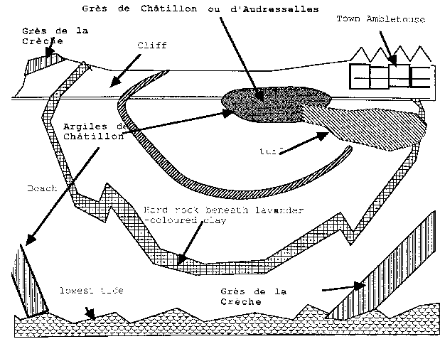
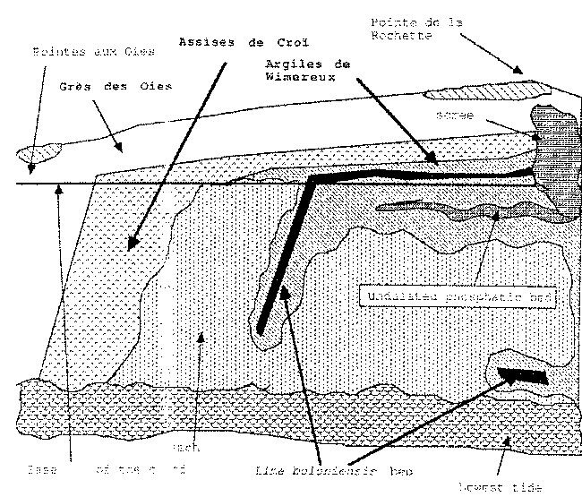
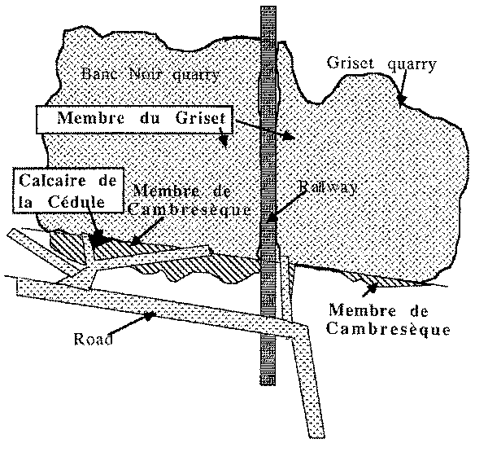
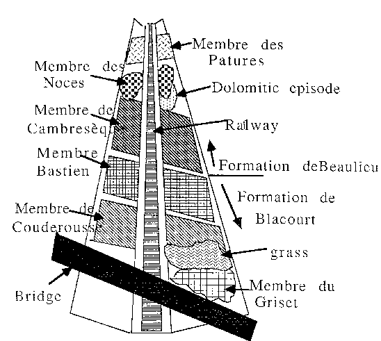

Excursion 30th September 1988
The Jurassic and Devonian of the Boulonnais
Ambleteuse Beach
North of the viIlage of Ambleteuse a small anticline has been cut by erosion so that the various beds are exposed in an arc along the beach between Ambleteuse and Audresselles. This arc is imperfect because of small faults which make the structure more complex.
Going, down the slipway, we reach the Grès de Châtjllon, or Grès d'Audresselles the surface of which bears very distinct ripple marks. At this place the sandstones are almost completely barren of fossils
Towards the sea and the North, we meet a succession of alternating limestones and marls forming the Argiles da Châtillon, thus named from the cliff south of Boulogne sur Mer. In the middle part of this formation. there is an easily identified marker layer of very soft lavender-coloured clay. The Argiles de ChâtilIon end with an oyster lumachelle containing Aulacostephanus pseudomutabilis
Above this lumachelle, a thick and hard bed containing Gravesia marks the beginning of the Portlandian, represented by the Grès de Ia Crèche.
Fossil vertebrates have been found throughout Argiles de ChâtilIon. Besides the almost complete Machimosaurus skeleton found bv Dr Vadet in 1987 they have yielded Dacosaurus maximus, Steneosaurus bouchardi, Metriorhynchus sp., vertebrae and teeth of plesiosaurs, pliosaurs and ichthyosaurs as well as rare fragments of dinosaurs, jaws and teeth of Ischyodus, Lepidotus and other indeterminate fishes and a turtle shell (Plesiochelys?)

From the Pointe Aux Oies to the Pointe De la Rochette
We examine here one of the best sections of the Portlandian series of the Boulonnais,
Going down the Pointe aux Oies cliff, we walk on recent, Holocene sands, poorly separated from the Wealden sands that overlie the Purbeckian lacustrine limestone which forms a ledge easily seen in the cIiff somewhat farther south.
Below this ledge. sands and lignite-bearing clays can be seen: the arc often altered by running water and landslides. They overlie alternating yellow-coloured hard and soft sandstone beds. The whoIe succession (sands +lignite-bearing clays + yellow sandstones) forms the Grès des Oies.
Under the Grès des Oies and in the direction of the Pointe de la Rochette, one finds alternating blue-coloured Iimestones and marIs containing many bioturbations, and covering a layer of phosphatic nodules (PS) : this is known as the Assises de Croï
Farther in the direction of the Poudingue de la Rochette, and underlying the Aisses de Croï. one finds the Argues de Wimeroux, adnd soon we walk on the top of a thick hardened bed that cuts across the beach, the Lima boloniensis bed. Slightly below it are two phosphatic IeveIs separating the Argiles de Wimereux (north of the Pointe de Ia Rochette) from the Argiles de la Crèche (south of the Pointe de la Rochette).
We are now on the. scree at the foot of the Pointe de la Rochette, and blocks of Poudingue de la Rochette can be seen here and there. The Poudingue can be seen farther up the cliff, when one climbs up the cape.
The Poudingue de la Rochette is overlain by coarse sands, themselves overlain by clays and lignite-bearing sands. The conglomerate and the overIving beds have yielded many vertebrates at a locality that has now disappeared, notably Goniolpholis undidens, dinosaur remains (Megalosaurus, Iguanodon and another, undeterminate herbivorous dinosaur) , plesiosaur remains and numerous complete specimens of Lepidites (which have unfortunately been lost) as well as abundant turtle remains.
Looking towards Wimereux, we see on the beach the Argiles de la Crèche and the upper part of the Grès de Ia Crèche. The latter have also yielded vertebrate remains, notably Steneosaurus rudis and the complete specimen of Spathobatis boloiensis still kept in the Boulogne Museum.

THE BANC NOIR AND GRISET QUARRIES
When we enter the Banc Noir quarry, we go down Into a trench dug Into purplish shale with intercalated greenish carbonate beds. This is the Membre de Cambresèque formerly known as Schistes de Cambresèque, It has vyielded here a specimen of Watsonesteus cf. fletti.
In the upper left-hand part of the trench there are limestones and blue clays, formerly known as the "Calcaire de la Cédule”, today considered as the lower part of the Membre de Cambresèque , which overlie the black limestones of the Membre du Griset of the Formation de Blacourt. This formation has yielded an abundant fish fauna, mainly from the Griset quarry, in its upper part and in the north-eastern corner.
Recent work by Lelièvre , Gouje, Blieck and Janvier, and bv Belles-Isles and Vézina has revealed the occurrence of arthrododires (Watsonosteus cf. fletti, Millerosteus sp., Holonema sp) antarchs (Asterolepis sp), ptyctodonts (Rhynchodus) and lungfishes.

THE FERQUES RAILWAY CUTTING
This new railway cutting has been dug in order to Iink the Carrieres du Boulonnais with the S.N.C.F. network. and it has provided a fine section through the Devonian of the Boulonnais.
When We stop on the bridge of the Déparmentale 243, which spans the cutting and look in the direction of Couderousse and the Stinkal Quarries, We have on the left the Giivetian (Formation de Blancourt), not easily seen now, going on for a few tens of metres on the right, and then overlain by the Frasnian Formation de Beaulieu consisting mainly of shales, but showing here in its middle a dolomitic and carbonated episode, the Membre des Noces.
Both formations have yielded Ptyctodus teeth at this locality.
